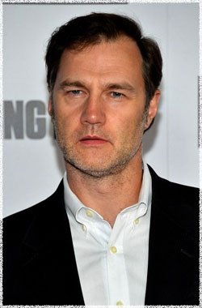

Дэвид Моррисси
 Губернатор - является харизматичным лидером Вудбери, казалось бы, утопическое сообщество, забаррикадировалось за стенами, которую он построил с нуля. Он защищает граждан Вудбери от ходячих и предоставляет им кров, пищу, одежду и пожалуй самое главное, это подобие того, что было в мире до того как мёртвые начали ходить.
Дэвид Моррисси считается одним из самых универсальных британских актёров своего поколения, совершившим многое для кино, телевидения и эстрады.
Родившись в Ливерпуле, Моррисси уехал учиться в Лондон в RADA. После окончания школы, он получил разнообразные и сложные роли. Он появился в некоторых из самых популярных и приветствуемых критиками телевизионных драмах, таких как Наш общий друг, Разгон Off, Holding On, политической драме Большая игра, и одной из самых спорных драм Соглашение, в которой он играл Гордона Брауна. В последствии он получил премию RTS за своё воплощение Брауна. В 2006 зрители видели Моррисси в Виват Блэкпуле, 90-минутной программе для BBC1, основанной на его персонаже в Блэкпуле. Моррисси получил премию Лучшего Телевизионного актёра в Премиях Арены, и престижную номинацию на "Золотой глобус".
Его опыт на телевидении и сцене привёл его к миру кино, и он пошёл дальше, чтобы сыграть роли в ряде фильмов, таких как: Хилари и Джеки, Голоса, Рожденный романтиком, Выбор капитана Корелли, Цена измены, В дурмане Стивена Вулли, Жатва, Мой домашний динозавр, Ещё одна из рода Болейн.
В дополнение к своей действующей карьере, Моррисси основал свою собственную производственную компанию Tubedale Films. Компания выступила со-продюссером фильма Патриса Леконта, L’Homme Du Train с Джонни Холлидей и Джин Рочефорт в главных ролях.
Наиболее известен по фильмам:
Отсчет утопленников
Еще одна из рода Болейн
Цена измены
Стать Джоном Ленноном
Мой домашний динозавр
Разум и чувства
Доктор Кто